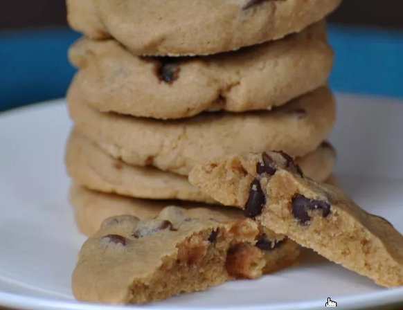

Recipe for Easy Chocolate Chip Cookies

Description
Enjoy these classic chocolate chip cookies that are soft, chewy, and simple to make. This recipe requires no chilling time, allowing you to indulge in freshly baked cookies in under 30 minutes. Yields about 24 cookies.
Ingredients
- 1 cup unsalted butter, melted
- 1 cup packed light brown sugar
- ¾ cup granulated sugar
- 2 large eggs
- 2 teaspoons vanilla extract
- 2½ cups all-purpose flour
- 1 teaspoon baking soda
- 1 teaspoon salt
- 2 cups semi-sweet chocolate chips
Instructions
- Preheat oven to 375°F (190°C). Line baking sheets with parchment paper.
- In a large bowl, whisk together melted butter, brown sugar, and granulated sugar until well combined.
- Add eggs and vanilla extract; whisk until smooth.
- Stir in flour, baking soda, and salt until no dry flour remains. Fold in chocolate chips.
- Drop 1½-tablespoon-sized balls of dough onto prepared baking sheets, spacing them about 2 inches apart.
- Bake for 10 minutes, until edges are lightly golden. Centers may look slightly undercooked.
- Allow cookies to cool on the baking sheet for 3 to 4 minutes before transferring to a wire rack to cool completely.